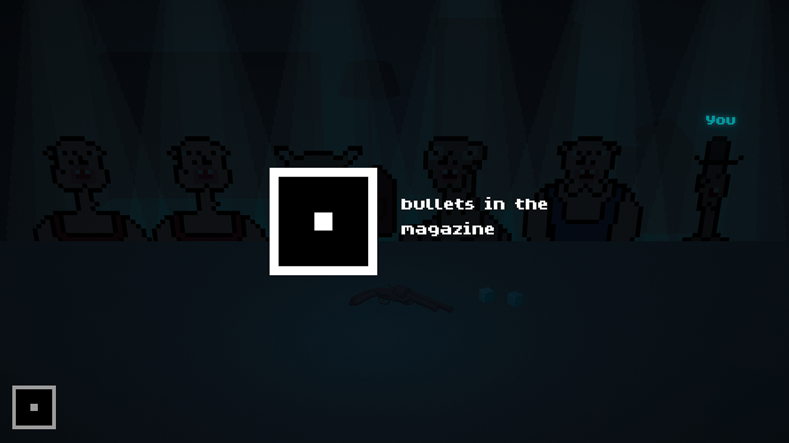
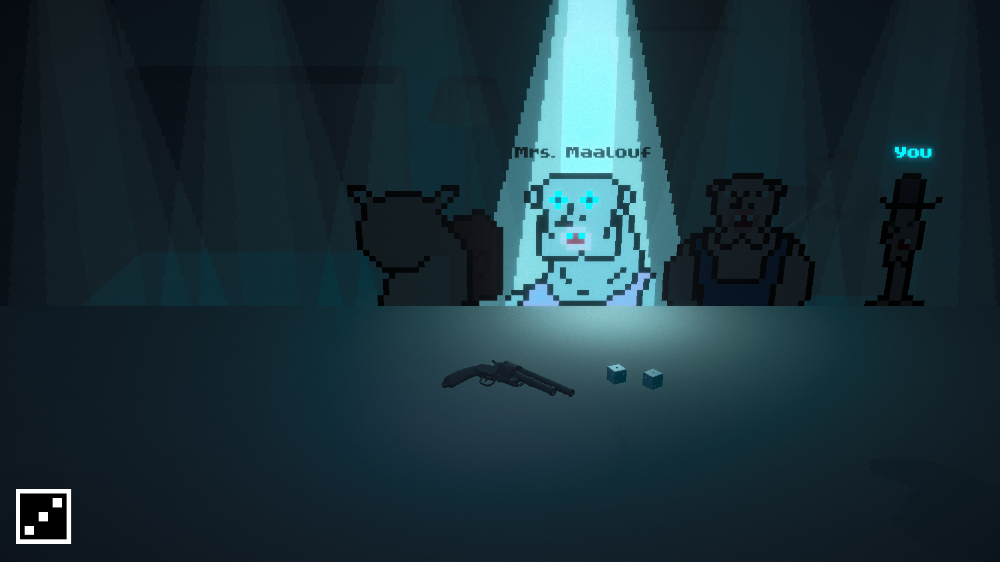
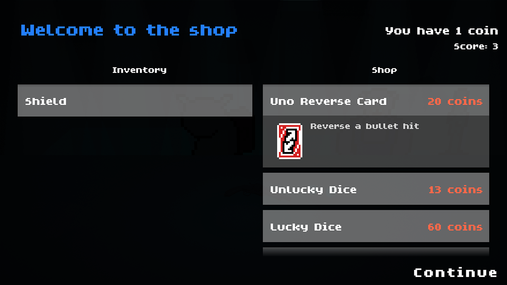

2D Game Made with Unity
In Russian Rollette, you play as a the character playing Russian roulette with 5 other NPCs for money, however, there is a dice that is rolled at the beginning of every round which decides the number of bullets that are placed in the revolver’s chamber. The game also features i tems that help you gain a better chance at surviving more rounds.
Made for the GMTK GameJam, placed 663rd out of 6'127 entries, responsible for/helped with Game Design, Game Art, Game Music



